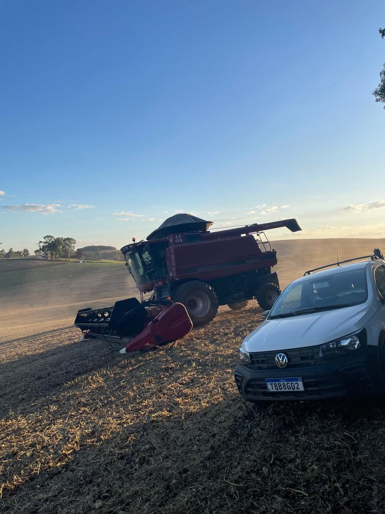

Tecnologia Rural
A introdução de tecnologias contemporâneas, como sistemas de transporte e soluções energéticas renováveis, está revolucionando as áreas rurais, otimizando a produtividade agrícola e estabelecendo uma ponte logística com os mercados urbanos.

Inovações Tecnológicas

Transporte
Caminhões e estradas facilitam a distribuição de produtos rurais.

Energia Renovável
Fontes como solar e eólica promovem a sustentabilidade agrícola.